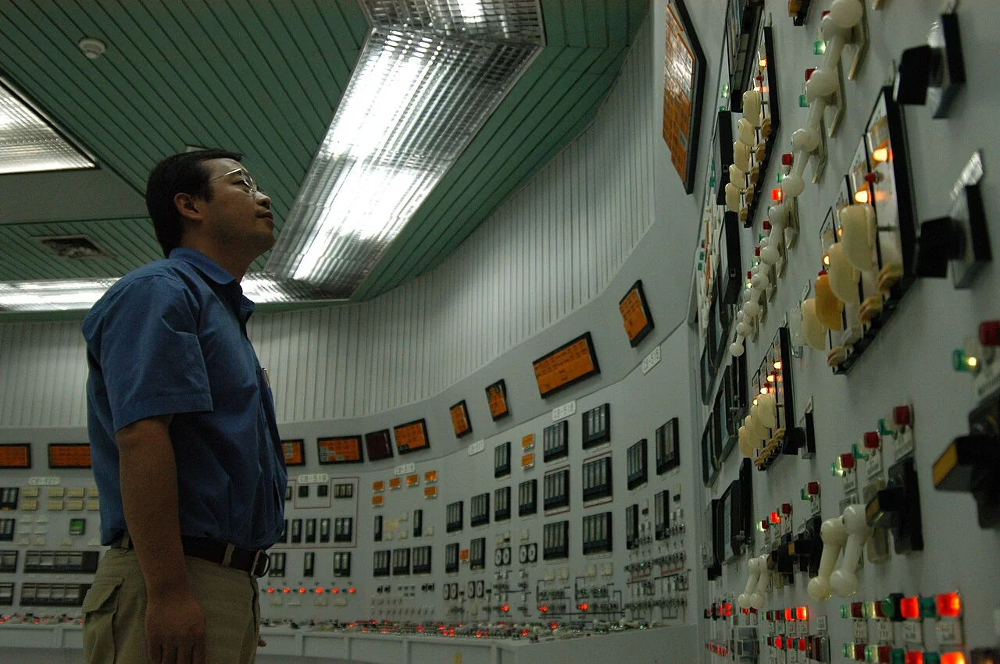
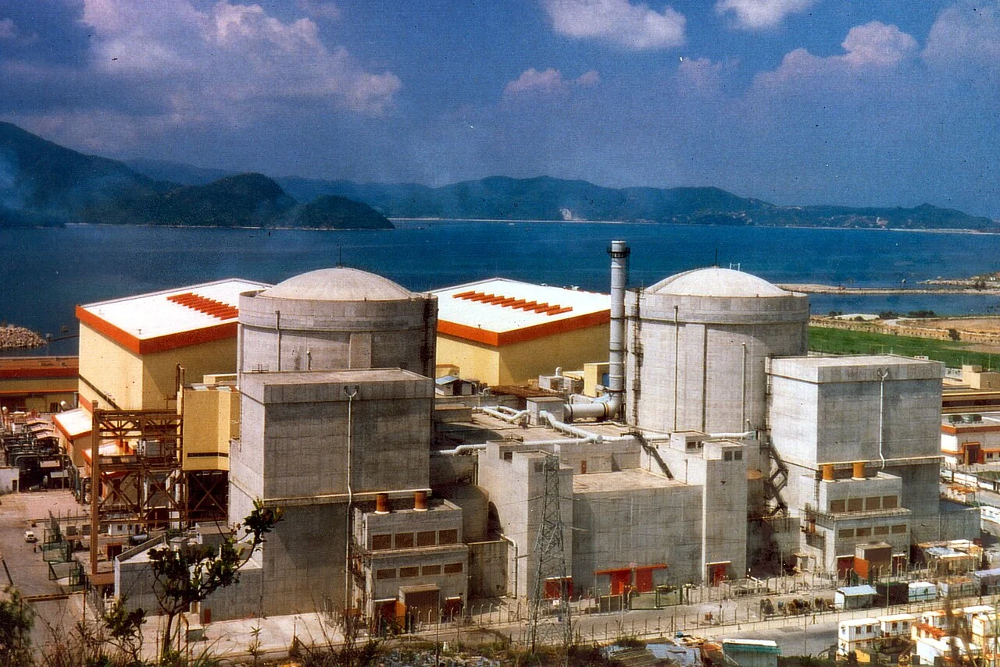
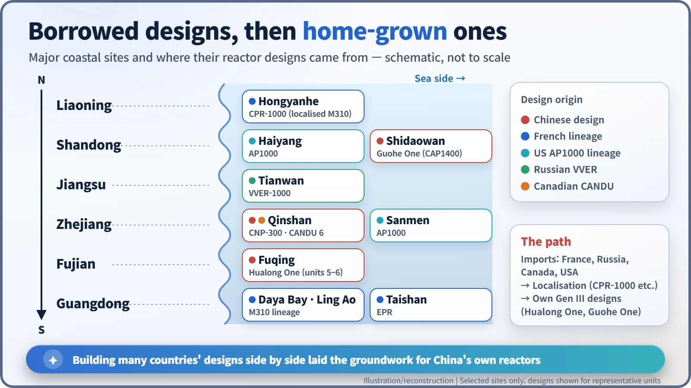
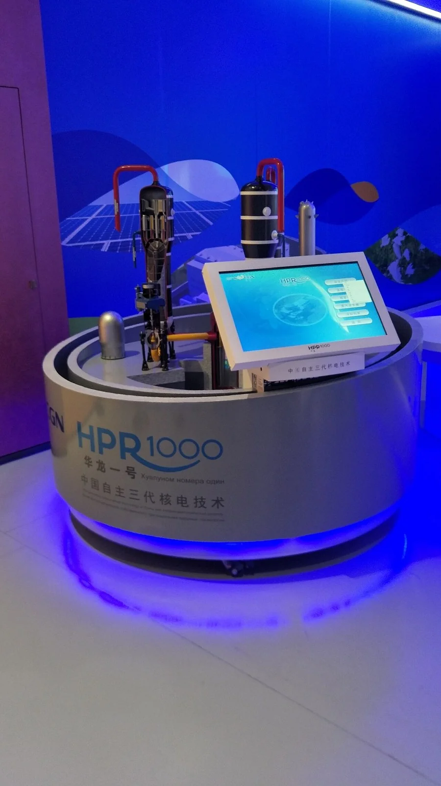
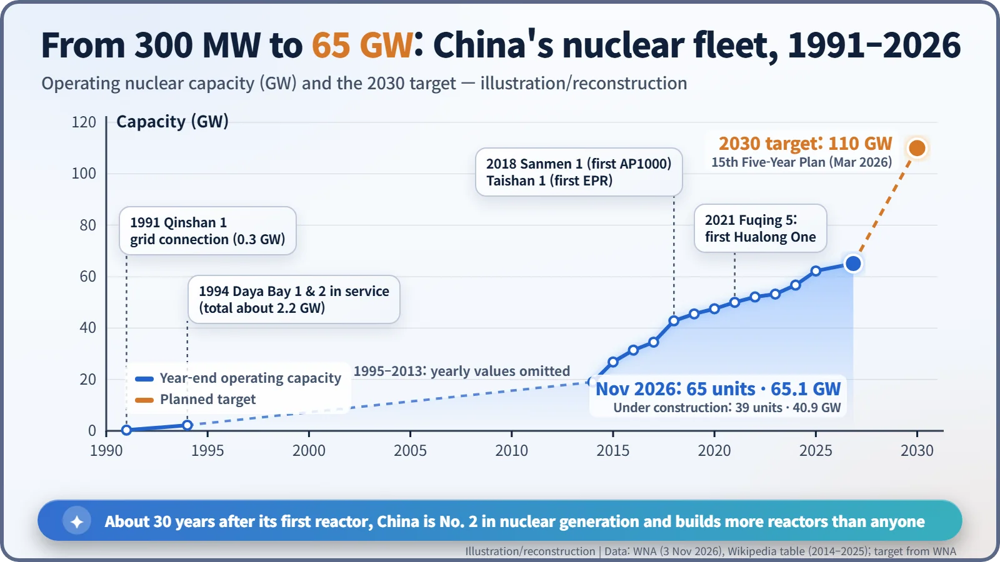

Nuclear History · 279
From 300 Megawatts to World Number Two — The Rapid Growth of Nuclear Power in China (1991–2026)
China learned by building French, Canadian, Russian and American designs side by side, then put its own names on the reactors it builds today.
China connected its first home-designed reactor, the 300 MWe Qinshan 1, to the grid in December 1991. By learning from French, Canadian, Russian and American designs and then building its own, it overtook France in nuclear generation in 2021. As of November 2026 it has 65 operable reactors and 39 under construction, more than any other country, although nuclear still supplies only about 4% of its electricity.
Two roads to a start
Some of the electricity that lights up Hong Kong at night comes from across the water. On the coast of Daya Bay, in Shenzhen just north-east of the city, two reactors have been running since 1994, and Hong Kong's utility CLP buys about 80% of what they produce. They belong to the first generation of Chinese nuclear power. Some thirty years later, China builds more reactors than any other country. [1]
China's commercial nuclear power began along two roads at once. The first was a plant it designed itself. Qinshan 1, in Haiyan County, Zhejiang province, was started in 1985 and first connected to the grid on 15 December 1991. At 300 MWe (megawatts of electricity) it was modest, but it was China's first domestically designed and built nuclear plant, with about 95% of its components made at home. [2]

The second road was a plant it bought. Daya Bay 1 and 2 were M310 pressurised water reactors from the French company Framatome, 944 MWe each. A pressurised water reactor keeps its hot cooling water under high pressure so that it does not boil. Unit 1 was connected to the grid in August 1993 and unit 2 in February 1994. By 1994 China had about 2.2 GW (gigawatts; 1 GW = 1,000 MW) of nuclear capacity. [3]

A coastline that became a reactor showroom
In the 2000s electricity demand soared, and China's dependence on coal and its air pollution became pressing problems. Nuclear construction picked up, and in an unusual way: designs from several countries went up side by side along one coastline. Ling Ao, next to Daya Bay, continued the French line. Qinshan Phase III used Canadian CANDU heavy-water reactors. At Tianwan in Jiangsu, Russian VVER-1000 units were built. In 2007 China signed with Westinghouse of the United States for four AP1000 units at Sanmen and Haiyang, and it also built France's EPR at Taishan in Guangdong. [1]
In effect, China learned by building other people's designs, and it localised them along the way: the CPR-1000, a Chinese adaptation of the French M310, went into plants such as Hongyanhe in Liaoning. After the Fukushima accident in 2011, the State Council halted new approvals for safety checks and reopened them only in October 2012. In 2018 Sanmen 1 (the first AP1000 anywhere) and Taishan 1 (the first EPR in commercial operation anywhere) began supplying power.

Putting its own name on what it learned
Next came designs of its own. Hualong One (HPR1000) is a third-generation pressurised water reactor that merged the separate designs of the two state-owned nuclear companies, CNNC and CGN. The first unit, Fuqing 5 in Fujian province, had its first concrete poured on 7 May 2015, was connected to the grid on 27 November 2020 and entered commercial operation on 30 January 2021: about five years and nine months from start to finish. The design has also gone abroad: two units at Karachi in Pakistan entered commercial operation in 2021 and 2022, and another, Chashma 5, has been under construction since December 2024. [4] [1]

A third state-owned company, SPIC, developed Guohe One (CAP1400), a larger design built on the AP1000. Shidaowan 1 in Shandong province entered commercial operation at the end of 2024. Then, on 31 July 2026, the State Council approved eight new units in one go: six Hualong One and two Guohe One. Reported investment was more than 160 billion yuan (some reports say more than 170 billion). It followed approvals of 11 units in 2024 and 10 in 2025. [5] [6]
The numbers in November 2026
According to the World Nuclear Association's country profile, updated on 3 November 2026, China has 65 operable reactors (65,085 MWe) and 39 under construction (40,916 MWe), more under construction than any other country. In 2021 its nuclear plants generated 407 TWh (terawatt-hours), overtaking France's 361 TWh and making China second only to the United States in nuclear generation. That was exactly 30 years after Qinshan 1 first fed the grid. In installed capacity, China and France are close, and which is ahead depends on how capacity is counted. The 15th Five-Year Plan, approved in March 2026, aims for 110 GW by 2030. [1] [2]

| Milestone | Reactor | Design origin | Date |
|---|---|---|---|
| First home-designed plant on the grid | Qinshan 1 | Chinese (CNP-300) | 15 Dec 1991 |
| First imported large PWR on the grid | Daya Bay 1 | French (M310) | Aug 1993 |
| First AP1000 in the world in service | Sanmen 1 | US (AP1000) | Sep 2018 |
| First Hualong One in service | Fuqing 5 | Chinese (HPR1000) | 30 Jan 2021 |
| First Guohe One in service | Shidaowan 1 | Chinese (CAP1400) | End of 2024 |
Even so, nuclear's share is small. Nuclear generation of 451 TWh in 2024 was about 4% of China's total electricity output, because the country uses so much electricity overall. [1]
The homework that comes with speed
Many observers trace this pace to standardisation and continuous construction, building the same design at site after site without a break, together with a domestic supply chain. Skilled crews and factories move straight on to the next unit instead of disbanding.
Safety regulation has to keep up. The International Atomic Energy Agency reviewed China's regulatory system in 2010 and 2016, and again in July 2025 through its Integrated Regulatory Review Service. The 2025 team said the regulator had made strong progress in becoming independent and competent. It also recommended that the regulator's staff grow in step with the fast-growing industry. The scale of the change explains why: at the 2016 review China had 32 operating reactors, while at the 2025 review it had 59 in operation and 32 under construction. [7] [8]